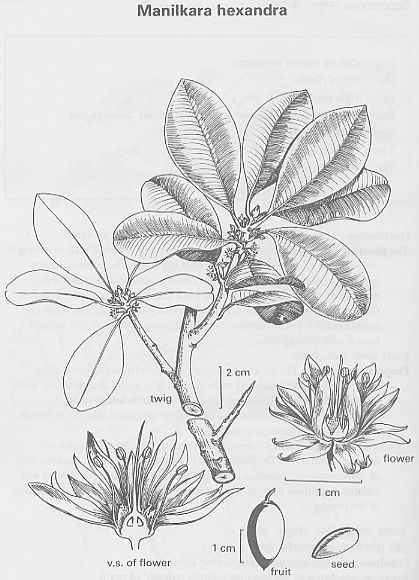

Manilikara hexandra (Roxb.)
Dub.
Taxonomic Details

----- Correct Name
----- Classification
----- Synonyms
----- Common Names
Other Biological Details
----- Habit and Habitat
----- Diagnostic Features
----- Reproductive Biology
---------- Breeding System
---------- Phenology
---------- Pollinators
---------- Seed Biology
----------Seed
Germination
------ Cultivation
----- Major Pests and Diseases
Economic Potential and Uses
----- Parts Used
-----Uses
----- Harvesting Practices
----- Produce and Products
----- Chemistry
----- Processing Techniques
----- Other uses
----- Economic Potential to the Country
----- Export Potential
Miscellaneous Information
Literature
Taxonomic
Details
Correct Name
: Manilikara hexandra (Roxb.)
Dub.
Family : Sapotaceae
Synonyms : Mimusops hexandra Roxb.Mimusops
indica;
Common Names :
English: Bakula,
Milk tree,
Hindi: Khirni, Khirkul,
Bengali: Khirkhejur,
Krikhiyur,
Malayalam: Pala, Khrini,
Obtuse leaved mimusops, Pala, Palamunnippala, Palamunpala, Pazhamunpala,
Tamil: Palla, Palai, Kannupala,
Ulakkaippalai
Telugu: Manjipala, Pala; Kirni, Kshirika,
Manjipala, Patla, Pola,
Kannada: Bakula; Bakula,
Hale Hannu, Kiranimara,
Marati: Rayan, Raini, Khirni,
Kirni, Rajadanah, Rajadani, Ran, Ranjana
Guj.: Rayan, khirni;
Oriya; khirakuli
Back to Top
Other
Biological Details
HABIT & HABITAT
A small to medium-sized evergreen tree
with a spreading crown and straight massive bole, found in central India and the
Deccan Peninsula.
Latitude:
0-18,
Longitude:
0-73,
Altitude
: 0-1000,
Habitat:
Along the roads, Coastal areas, Cultivated, Dry areas of coastal zone,
dry deciduous forest, Dry regions, evergreen forest, Forests, Gardens and
Roadsides, Hill slopes, Hills, moist deciduous forest, near villages, Ravines
& Slopes, Road sides and Tropical Forests.
Biotic
Zone:
Deccan peninsula, Deccan Plateau, Konkan plain and Peninsular India.
Availability :
Misc:
Alibagh, Bileshwar, Ghumli and Abhapara hill in Barda hills, Chaumu,
Chelama, Deccan, Gir forest near Sasangir, Kankai, Junwania etc.,
Jamnagar, Kakkupe Reserve Forest, Karlekhind, Madanpur, Mahanandi, Nallamalais,
Porvorim, Rajkot, Rampura, Reserve forest, Singhpur, Srisailam, Trombay
and Veli.
Country: Asia, India and Sri Lanka.
Zone: Central, East, North, North West, South, South east and West
zone.
State:
Andhra Pradesh, Bihar, Goa Daman Diu, Gujarat, Karnataka, Kerala, Madhya
Pradesh, Maharashtra, Rajasthan, Tamil Nadu and West Bengal.
District:
Bangalore, Banswara, Belgaum, Bellary, Bilaspur, Bombay, Champaran,
Chattarpur, Chengalpattu, Coimbatore, Damoh, Dhar, Dharmapuri, Goa, Hoshangabad,
Indore, Jaipur, Jhalawar, Kolar, Kota, Kurnool, Nilgiri, North Arcot, North East
Districts, Panna, Pulni, Raigad, Raipur, Raisen, Ramnathapuram, Rewa, Sagar,
Satna, South Arcot, Thanjavur, Tirunelveli and Uttar Kannada.
Taluk:
Bardez, Ghatol, Jhalarapatan and Pachmarhi.
Status :
Back to Top
DIAGNOSTIC
FEATURES
A small to medium-sized evergreen tree with
a spreading crown and straight massive bole, found in central India and the
Deccan Peninsula ; it is cultivated throughout the greater part of India for
ornament and also for the sweet edible fruit. Bark dark gray, deeply furrowed
; leaves elliptic, obovate or oblong, coriaceous.
Back to Top
REPRODUCTIVE BIOLOGY
Flowers solitary or in fascicles, white or
pale yellow ; berry ovoid or ellipsoid, c. 1.5-2.0 cm.long, reddish yellow ;
seed 1, rarely 2, ovoid, i.0-1.5 cm. long, reddish brown, shining.
Breeding System :
Phenology :
The tree flowers from November-January and the
fruits ripen from April-July.
Pollinators:
Seed Biology :
Seed Germination:
The tree is a light demander and natural reproduction
by seed does not ordinarily take place under a dense canopy ; seed fellings
have, there- fore, to be heavy and the best method is to girdle the trees adjoining
seed bearers. Even in gaps so made, seedling growth is poor because of the irregularity
of good seed years and large scale removal of edible fruits by animals and man.
Young plants require low shelter, which is obtained in high forest by sparing
the forest undergrowth which protects the soil and spares the fruit. The tree
may be artificially propagated, like Mimiisops elengi Linn., by seed
during rains.
Cultivation:
Back to Top
MAJOR PESTS & DISEASES
Pests:
Diseases:
Back to Top
Economic
Potential and Uses
Parts used
Fruits ,Seed, Wood.
Uses
-
Ripe fruits of the tree are eaten fresh or dried.
Harvesting Practices
Produce and Products
Rayan Oil.
Back to Top
Chemistry
An analysis of the fruit gave the following values: moisture, 68.61 ; protein,
0.48 ; fat (ether extr.), 2.42 ; carbohydrates, 27.74 ; and mineral matter, 0.75%:
calcium, 83 mg. ; phosphorus, 17 mg. ; iron, 0.92 mg. ; carotene (as vit. A),
675 i.u. : thiamine, 70.33 mg. : riboflavin, 77.41 mg. : nicotinic acid, 0.66
mg. : and ascorbic acid, 15.67 mg./ 100 g.
The fatty acid composition of the oil is as follows: palmitic, 18.9: stearic,
14.1 ; lignoceric, 1.1 ; oleic, 63.2 :and linoleic acid, 2.7%.
The average composition of the leaves is as follows (dry basis): crude protein,
9.3 ; ether extr., 6.2 ; N-free extr., 53.9 ; crude fibre, 23.3 ; total ash, 7.4
; insol. ash, 0.8 : phosphorus (PaO,), 0.49 ; and calcium (CaO), 2.00% .
Back to Top
Processing Techniques
Back to Top
Other Uses
-
M. hexandra yields a strong dense timber smooth, fairly straight to irregular,
even and fine textured. hard, lough, strong and heavy.
- The wood is commonly used for sugar mills and oil presses, piles, posts, joists
and beams in construc- tion, and agricultural implements and carts. It is suitable
for mallet heads, rollers, railway keys and brake blocks, tool handles, turnery,
furniture, panels, walking sticks and for such other articles where toughness
and hardness are of importance.
- Ripe fruits of the tree are eaten fresh or dried ; they are sweet but astringent.
The seeds (wt., 13.2 g /ioo seeds) on extraction with ether or light petroleum
yield 24.6% (47.2% in kernels) of an edible oil, known commonly as Rayan Oil ;
The seed cake can be used as manure.
- The leaves are used as cattle fodder.
- The tree yields a gum.
- The bark contains 10% tannin and may be used for tanning
purposes. It is used in fevers and as a general tonic. The bark retards the fermentation
of toddy.
- The seed oil is considered demulcent and emollient. M. hexandra
has been successfully used as a root-stock for Achras zapota ; the methods usually
employed are inarch- ing and side grafting
- Seed yield an oil. Extensively
employed for sugar mills, oil presses, tool handles, piles, posts, beams, in construction
work, ploughs, harrows, carts etc.
- It can be used for railway work, brake blocks,
mallet heads, heads and rollers.
Back to Top
Economical
Potential to the country
Back to Top
Export Potential
Back to Top
Miscellaneous
Information
Back to Top
Literature
- Minor
Forest Products of India (Edible wild plants),Vol 1, Krishnamurthy.
T. ,1993.
- Sasya Sahyadri- A CD
on Plants of Western Ghats, 2003, K.N. Ganeshaiah.
- Singh, N. K. and Singh, D. P., 2001, Ethnobotanical
Survey Of District Balrampur, Flora And Fauna, Vol.7. No.2 pp.59-66
Back to Top